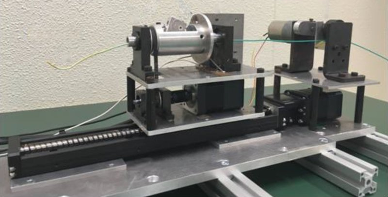

Academic bedside robots · kagawa_mrf_guo2019
RAECS / ECRS
Kagawa/BIT magnetorheological-fluid haptic master-slave catheter system (RAECS / ECRS)

1 / 9


- Family
- Academic bedside robots (academic)
- Devices
- guo2016: catheter on a slave whose insertion angle adjusts 0-45 deg (guo2016 Sec. 2.4); yin2018 and guo2019: one 5 F patient catheter (7 F input catheter at the leader); zhang2021: catheter or guidewire held by an electromagnetic adaptive collet (Sec. 3, Fig. 4); li2022: 5 Fr catheter and 260 cm J-type guidewire at once, catheter and guidewire manipulation units (CMU, GMU) (Sec. 2.2, 4.4)
- Degrees of freedom
- 2 for the catheter (axial, radial; guo2016, yin2018, guo2019); li2022 CMU + GMU move catheter and guidewire separately (count N.R.)
- Push
- Clamp relay
- Twist
- Rotating clamp
- Tested up to
- Phantom
- Sim-to-real
- None found — No simulation-trained controller found for this robot.
Testing
- Highest level
- Phantom
- What was tested
- In vitro only: guo2016 tracking and force-feedback benches with a vascular model; yin2018 ten novice volunteers drove a 5 Fr catheter through a rigid cerebral model into a wide-neck aneurysm; guo2019 ten operators in the EVE model; zhang2021 ten non-medical subjects in the EVE model with collision cues; li2022 tracking tests and six trialists inserting a guidewire into the EVE model with and without haptics; zhang2025 volunteers reaching targets along a 15 cm vascular-model path (Sec. 4 of each)
- Key numbers
- guo2019: axial positioning error 1.23 +/- 0.07 mm, rotation 1.57 +/- 0.07 deg; li2022: mean translation tracking error 0.94 mm, rotation 0.89 deg (abstract); MR resistance 0.16-0.5 N across 30-150 mT; guo2016: axial tracking error < 2 mm; zhang2021: axial transmission error < 1 mm (10 runs), 5 Fr catheter driven at 3.5 mm/s in the force test; li2022: CMU/GMU stepping motors 0.36 deg resolution
Mechanism
- Push (translation)
- clamp-relay (guo2019: platform on two stepper motors, grasper A holds for insertion/retraction/rotation while grasper B holds the catheter during A's return; axial grip force 4 N, S8 reading of Sec. II-B)
- Twist (rotation)
- Rotation of the holding grasper (radial DOF)
- Device range
- 5 F catheter (guo2019)
- Target anatomy
- cerebrovascular / general (endovascular evaluator model)
Sensing and interface
- Force sensing
- Load cell on the follower for proximal force; 1.3 mm fibre-optic pressure sensor in a 5 F catheter for tip contact force, working range 0-0.2 N (guo2019 Sec. IV-B); guo2016: load cell on the driven module behind grasper 1, plus a tip force-sensor array; zhang2021: load cell under the clamp; li2022: two TEAC TU-UJ load cells (+/-5 N) and two torque sensors for radial torque (Sec. 2.2)
- Leader and haptics
- Passive MR-fluid haptic interface around the real input catheter; resistance up to ~0.5 N at 150 mT (0.4 N at 110 mT); three levels switched at tip forces 0.08, 0.10, 0.12 N (guo2019); ten operators noticed the step at 150 mT in 93 % of trials
- Imaging
- N.R.
- Sterility
- N.R.
Size
- Footprint (mm)
- li2022 slave: 920 mm overall length, 400 mm CMU/GMU travel (Sec. 2.2); earlier versions N.R.
- Mass (kg)
- N.R.
Simulation
- Simulation model
- VR catheter-operation simulators from the same group (guo2012_virtual; wang2016_virtual); no physics model of the follower found
- Sim-trained controller
- none found
Versions
- Lineage
- guo2016_design (MR-fluid leader, force-sensor array) -> yin2018_magnetorheological (2-DOF slave, force sensing unit) -> song2018_performance -> guo2019_novel (T-RO: MR leader around a real catheter, fibre-optic tip sensor, collision zones) -> zhang2021_magnetorheological (catheter+guidewire system) -> li2022_collaborative (ECRS: collaborative handles, hydrogel + solid MR fluid, tremor-reduction structure) -> zhang2025_innovative (MRF master interface); 2007: S. Guo (Kagawa) "new catheter operating system" (Guo, Kondo, Wang, Guo, Tamiya 2007, ICME; Rafii-Tari 2014 Table 4 row 2) (rafiitari2014_current); 2014-21: J. Guo / S. Guo grasper-type slave (Belikov GU2.1-2.3): 2014 grasper, 2019 wedge-block guidewire clamp (ICMA), 2020 fuzzy PID, 2021 pinion fixture (ICMA), Liao 2022 (Alekseeva 2025 Table 6 row 5, Fig. 10f) (alekseeva2025_design; belikov2024_evolution; chen2023_operating; li2024_design); 2006: Harbin Engineering University with S. Guo, master-slave catheter driving mechanism for intravascular neurosurgery, two stepping motors (disk gear rotation, gear-pair axial drive), Internet remote control, bench precision test of a 2 mm catheter with a laser displacement sensor (Feng 2006 ICMA) (Zhao 2022 Table 1 row 24; Li 2024 Fig. 5A) (feng2006_highly; zhao2022_remote; li2024_design)
Sources
- A Novel Robot-Assisted Endovascular Catheterization System With Haptic Force Feedback · IEEE Transactions on Robotics, 2019 · doi:10.1109/tro.2019.2896763 [guo2019_novel]
- Design and characteristics evaluation of a novel teleoperated robotic catheterization system with force feedback for vascular interventional surgery · Biomedical Microdevices, 2016 · doi:10.1007/s10544-016-0100-0 [guo2016_design]
- Magnetorheological Fluids Actuated Haptic-Based Teleoperated Catheter Operating System · Micromachines, 2018 · doi:10.3390/mi9090465 [yin2018_magnetorheological]
- Performance evaluation of a robot-assisted catheter operating system with haptic feedback · Biomedical Microdevices, 2018 · doi:10.1007/s10544-018-0294-4 [song2018_performance]
- A Magnetorheological Fluids-Based Robot-Assisted Catheter/Guidewire Surgery System for Endovascular Catheterization · Micromachines, 2021 · doi:10.3390/mi12060640 [zhang2021_magnetorheological]
- An Endovascular Catheterization Robotic System Using Collaborative Operation with Magnetically Controlled Haptic Force Feedback · Micromachines, 2022 · doi:10.3390/mi13040505 [li2022_collaborative]
- An Innovative Master Haptic Interface Employing Magnetorheological Fluids for Endovascular Catheterization · Sensors, 2025 · doi:10.3390/s25247450 [zhang2025_innovative]
- Virtual Reality Simulators Based on a Novel Robotic Catheter Operating System for Training in Minimally Invasive Surgery · Journal of Robotics and Mechatronics, 2012 · doi:10.20965/jrm.2012.p0649 [guo2012_virtual]
- A virtual‐reality simulator and force sensation combined catheter operation training system and its preliminary evaluation · The International Journal of Medical Robotics and Computer Assisted Surgery, 2016 · doi:10.1002/rcs.1769 [wang2016_virtual]
- Current and Emerging Robot-Assisted Endovascular Catheterization Technologies: A Review · Annals of Biomedical Engineering, 2014 · doi:10.1007/s10439-013-0946-8 [rafiitari2014_current]
- The Design of Endovascular Robots for Cardiac Interventions: A Survey · Journal of Field Robotics, 2024 · doi:10.1002/rob.22480 [alekseeva2025_design]
- Evolution and current state of robotic catheters for endovascular surgery: A comprehensive review · Engineering Science and Technology, an International Journal, 2024 · doi:10.1016/j.jestch.2024.101789 [belikov2024_evolution]
- The Catheter and Guidewire Operating Systems of Vascular Interventional Surgical Robots: A Systematic Review · IEEE Transactions on Medical Robotics and Bionics, 2023 · doi:10.1109/tmrb.2023.3272049 [chen2023_operating]
- Robotic Systems Design in Endovascular Treatment · IEEE Transactions on Medical Robotics and Bionics, 2024 · doi:10.1109/tmrb.2024.3377374 [li2024_design]
- Highly Precise Catheter Driving Mechanism for Intravascular Neurosurgery · 2006 International Conference on Mechatronics and Automation, 2006 · doi:10.1109/icma.2006.257760 [feng2006_highly]
- Remote vascular interventional surgery robotics: a literature review · Quantitative Imaging in Medicine and Surgery, 2022 · doi:10.21037/qims-21-792 [zhao2022_remote]
Notes
- Notes
- Highest validation is bench/phantom in every paper found; the animal and dog experiments belong to the RVIR-CI lineage (bit_rvirci_bao2022). MDPI and PMC render URLs returned HTTP 403 for the wrapper, so 2018-2022 MDPI papers are abstract-level (manual-download list in the notes). | 2026-11-08 X3: five MDPI/Springer papers read in full; gallery already 8, nothing added. All tests stay in vitro, so validation stays phantom
This record
- Read level
- full — full (guo2019; guo2016_design, yin2018, zhang2021, li2022 and zhang2025 PDFs in lit/pdfs, 2026-11-08)
- Picture
- guo2019_novel Fig. 3 (catheter manipulator photo: grasper A, load cell, grasper B on ball-screw stage), T-RO 2019, doi:10.1109/TRO.2019.2896763 ↗ — licence: publisher copyright; grade A
- Picture changes
- native extract (2073x1373); 4 text labels and 4 straight leader arrows on the wall, a curved double arrow above grasper A, and a double-headed motion arrow over the linear-stage base plate erased (LaMa + OpenCV Telea for arrow tips, local chroma correction of fill tint); cropped; not upscaled
- Found by
- academic: Search of academic bedside robots.
- Data
- JSON · YAML:
records/robots/kagawa_mrf_guo2019.yaml - Correction
- Suggest a correction [repository not created yet]